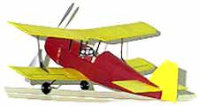
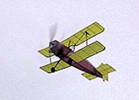

Model by Alex Munro
1/27/99
Thayer,
Another 11.99th hour arrival. My Andreason is very near complete and
here is a .jpeg file. You'll use your cropping abilities of course to
eliminate unsightly white areas. The plane is still short a rear peg,
tail wheel and the diagonal struts, but in the current configurations
weighs 10 grams from a stock kit. Okay, almost stock. I hinged the
elevators, used some polyester drafting film instead of bond paper for
the forward cowl sheet metal, sanded the crap out of it and used Peck Jap
tissue. I shaved the prop down to 1.2 grams and it seems nearly balanced
as is.
Times and completed pic to follow.
-alex
To: thayer@gryffinaero.com
Date: Thu, 4 Feb 1999
Subject: late, late, late pic/times
From: alex d munro
Thayer,
Hope you're feeling better.
Knowing full well that the postal deadline is past, I can't help but send in an in flight picture and some times (first hole in the weather was yesterday mid-day). Toss them out, or add them to the list with a big DQ next to them as you wish.
I got it "living room trimmed" for glide and no wild pitch changes at 100 turns. Upon cranking in the winds I felt that it needed a little nose weight, so I temporarily affixed a dime inside the cowl (2.5 grams, approx.). At the field it became evident that what it needed was down thrust. I only had some 1/8" stick so that's what I added. The times shown here are basically it's first trimming flights.
27,26,32
I was going for more turns when the motor exploded around 800 turns. I backed off one turn at that point to no avial :) Damage to some right side tissue and it destroyed the rear peg support. When installing the peg I decided to put it at the back edge, on the assumption that there are never any rearward forces on the rear peg. Obviously a blown motor adds a little load towards the rear...
After the minor repairs I'll be backing off on the nose weight and checking thrust as needed. It flies about a 35' left circle.
-alex munro
tacoma, washington